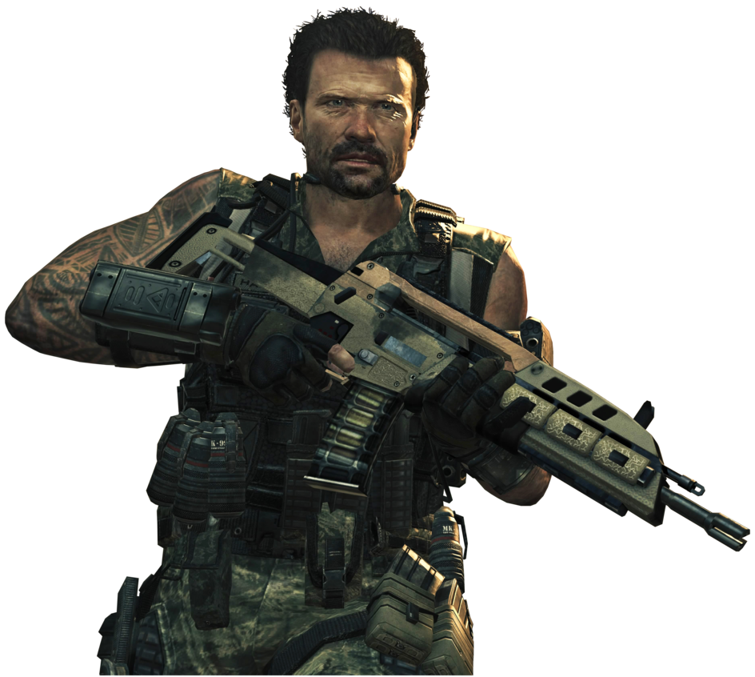
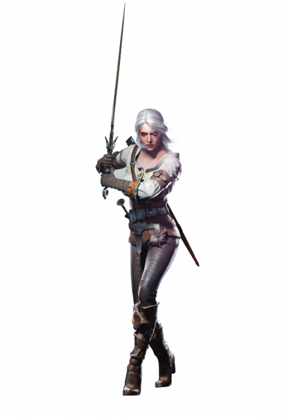
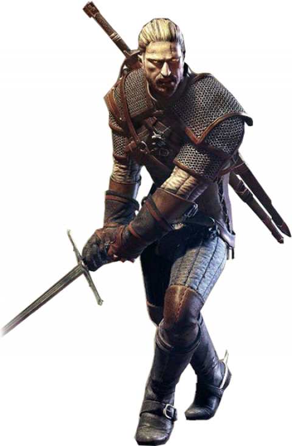
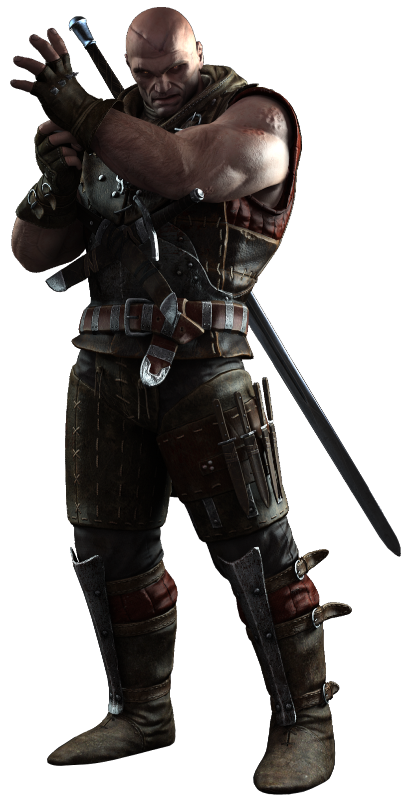

Assassin’s Creed Valhalla
The best Assassin’s Creed games
Download


Assassin’s Creed Valhalla is my personal favorite of this new revamped trilogy of games in the franchise, but the reasons I enjoy it might be turn-offs for others. The improved combat and raiding with a platoon is the focus of the game, and while it is well-executed, it ultimately casts aside the stealth roots of the franchise.
This is a step the series needs to take; to break loose from what defined these games nearly a decade ago in order to become the standard-bearer for action RPGs.
I also would like to get this out of the way: If you were planning on picking this game up on PC at launch, don’t. Not to say the console version can’t be buggy at times, but the PC version was nigh unplayable for me (a problem I also had with Watch Dogs: Legion,) and I gave up trying to work through it crashing constantly after an hour in. Another writer on our team had an issue regarding an NPC that died, and in order to progress, they had to talk with that NPC. They are now soft locked out of proceeding any further in the game, and that’s with the day one patch.

Call Of Duty: Modern Warfare is half prequel, half reboot to the Modern Warfare franchise. The game takes place before the events of Call Of Duty 4: Modern Warfare, but since this is a re-imagining of the entire story, developer Infinity Ward still has plenty of room to not simply revisit the events of those earlier games, but alter and expand upon them however they see fit.
It’s also a return to a more grounded, realistic military shooter after years of futuristic entries (Call Of Duty: WWII notwithstanding). Gone are advanced mobility mechanics–double-jumping and wall-running–and good riddance. You’re still able to slide into a crouch, and Infinity Ward has added door-mechanics that allow you to either open doors slowly or burst through, making your entrances that much more dramatic.
Likewise, the hero-shooter aspects of Black Ops 3 and 4 are no more–and good riddance to that, as well. You have different operators to play as in multiplayer, but there are no special powers cluttering up matches. In Special Ops Operators do have passive and active abilities, but that’s co-op and it’s still toned down from what we saw in last year’s game.
And unlike Black Ops 4, Modern Warfare has a complete single-player campaign that’s well worth playing.



The Witcher: Wild Hunt is a story-driven open world RPG set in a visually stunning fantasy universe full of meaningful choices and impactful consequences. In The Witcher, you play as professional monster hunter Geralt of Rivia tasked with finding a child of prophecy in a vast open world rich with merchant cities, pirate islands, dangerous mountain passes, and forgotten caverns to explore.
The Witcher 3: Wild Hunt ($59.99) is the final installment in the action RPG series by Polish video game studio CD Projekt Red. Geralt of Rivia sets out one last time to slay beasts, collect bounties, and protect the child of destiny. CD Projekt Red changes the game formula by introducing a massive, open world filled with monsters to hunt and quests to undertake. But it also greatly improves the series's combat by making alchemy more accessible and tightening the action controls. The rich story narrative that drives the game is rife with tragedy, folkloric horror, humor, and intrigue, keeping you on your toes every step of the way. The Witcher 3 easily one of the best games released this year, and is one of the best RPGs released this generation. The Witcher 3: Wild Hunt is also available on PlayStation 4 and Xbox One.
At first glance, The Witcher 3 seems like your standard action/RPG hybrid. Geralt fights men and monsters alike with sword strikes and magical attacks, as you would in any game set in a fantasy universe. However, Geralt's strength lies in his versatility, and not his brute strength. Geralt is an accomplished fighter, but a group of armed thugs can easily make short work of him. It is the combination of swordplay and movement abilities, magical attacks, powerful sub-weapons, and potent potions that make Geralt the powerhouse that he is. The Witcher 3's combat is fast and thrilling, but also highly strategic. Making good use of Geralt's resources is always more productive than brandishing steel alone.